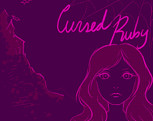
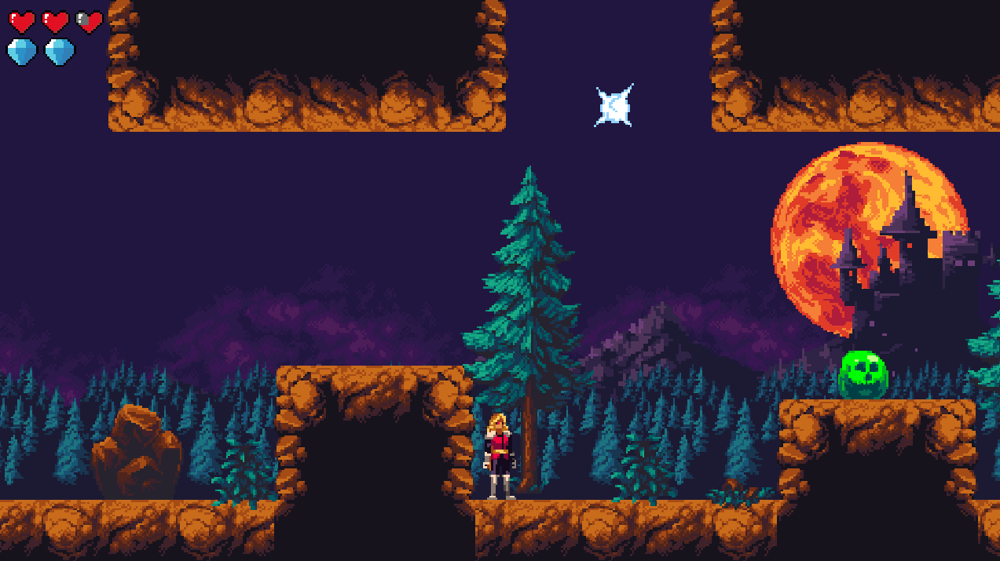
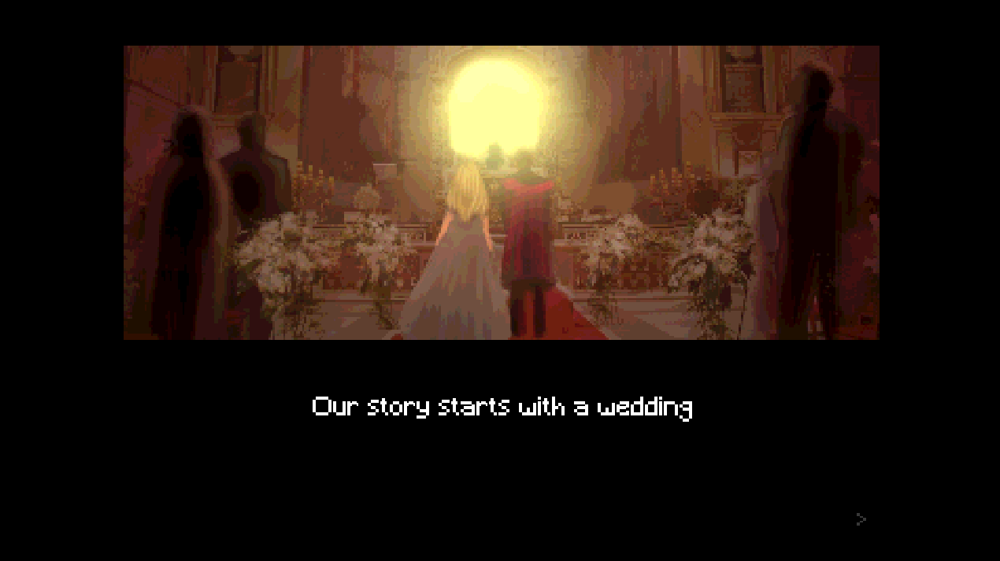
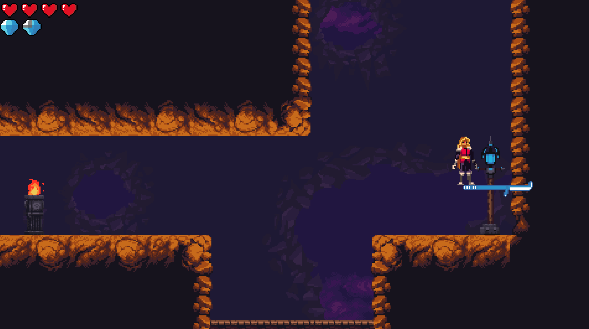

Cursed Ruby
A Castlevania-flavored Metroidvania built solo. 6th place out of 82 jam entries.

Screenshots



Video
About the Project
Ruby is cursed and on a deadline. She has weeks to storm her enemy's gothic castle and break the hex before it kills her. Cursed Ruby is a Castlevania-inspired Metroidvania built entirely solo for Metroidvania Month Jam 17, where it placed 6th out of 82 entries.
As the sole programmer, I owned every system: movement, enemy AI, progression gating, save state, UI, and audio wiring while coordinating freelance contributors across art, music, SFX, and voice on a jam schedule. The state machine and core systems built here became the direct foundation for Akoya and the Lost Pearl, surviving the transition to Godot 4.
Technical Highlights
- Reusable state machine and physics architecture carried forward into future projects
- Tilemap-based level system with ability-gated progression
- Progression save system
- WebGL build target alongside Windows
Features
- Castlevania-inspired enemies and environments, courtesy of Ansimuz
- Wall-sticking spear ability: fires into walls and stays there, becoming a temporary platform that creates puzzle-platformer moments inside an action game
- Localized air dash: momentum-independent aerial burst that functions as precise repositioning rather than room-crossing flight
What I Learned
This project is where Godot became a genuine tool rather than an experiment. State machines, physics, tilemaps and more settled into reusable patterns that survived the engine upgrade to Godot 4. Designing unconventional abilities led to level design challenges where I needed to provide compelling uses as well as making the abilities easy to understand. Moves that felt obvious to me as the programmer were invisible to fresh players until the environment forced experimentation.